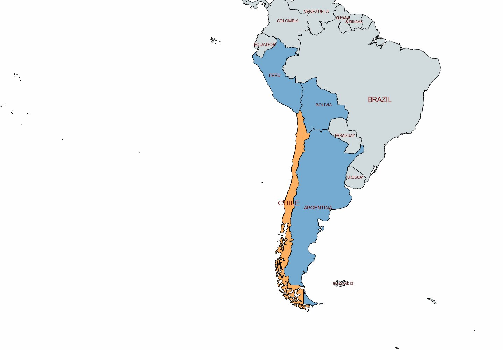
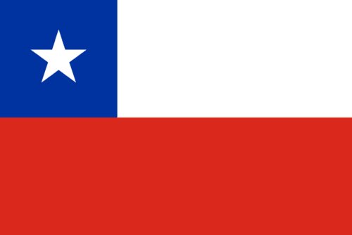
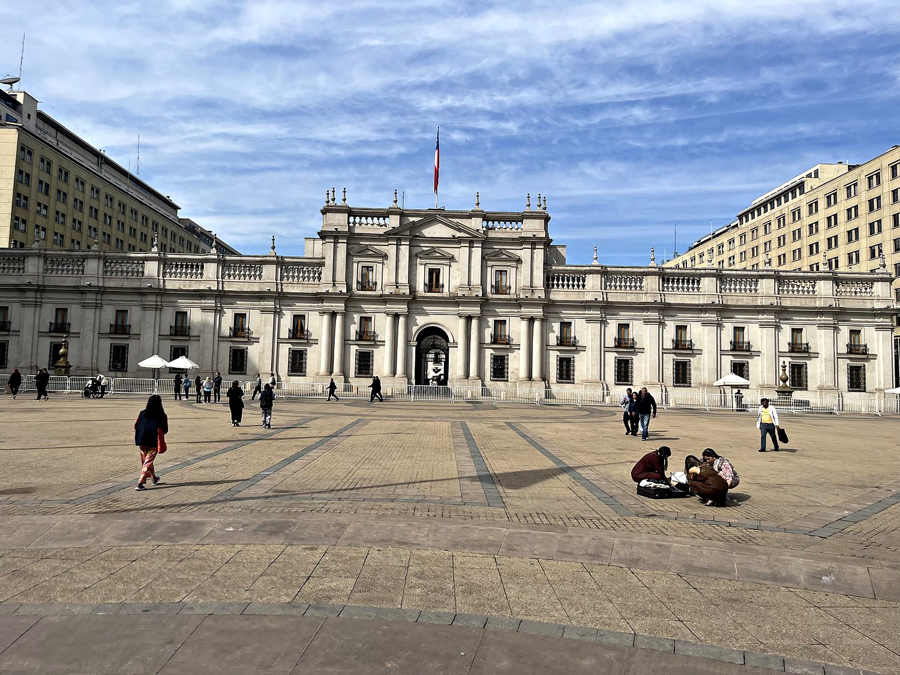
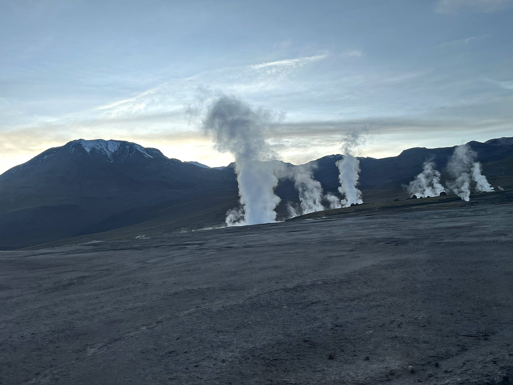
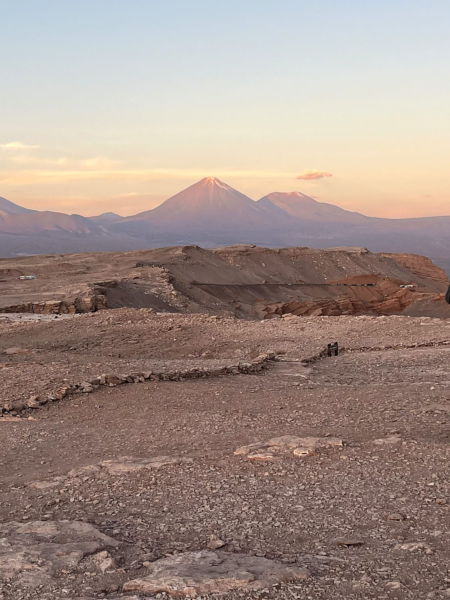

Chile is a country shaped like a piece of string left out in the rain, and I began my visit at its most improbable extreme: the Atacama Desert, the driest place on Earth. Parts of this desert have never recorded a single drop of rain in all of recorded history. It is so utterly, cosmically arid that NASA tests its Mars rovers here, presumably because actual Mars was booked. I explored it, ill-advisedly, by rented bicycle. This involved pedaling across a flat, cracked expanse beneath the perfect cone of the Licancábur volcano to salt lagoons where a bored flamingo or two waded through water saltier than the sea, then plunging into the “Devil's Throat,” a twisting red canyon so alien I half-expected the theme from a science-fiction film to start playing. Above it all hangs the clearest night sky on the planet, an ocean of stars so dense and bright that I finally understood why humanity spent so many millennia inventing stories about them. The Valley of the Moon pictured above, glowing at dusk, is a fair summary of the whole place: a landscape that looks less like a country than the surface of somewhere else entirely.
Chile's other, human half is centered on Santiago, a large and modern capital cradled in a valley beneath the snow-dusted wall of the Andes. It is a handsome city of leafy plazas, grand neoclassical buildings, and a genuinely excellent café-and-restaurant scene. On the day I visited, a nationwide strike had shuttered very nearly every Starbucks in the country, forcing me into an emergency chocolate shop, a hardship I bore with tremendous stoicism. At its center sit the Plaza de Armas, the cathedral, and La Moneda, the presidential palace, but Santiago's most affecting site is a newer one: the Museum of Memory and Human Rights. This museum unflinchingly documents the darkest chapter in the nation's story, and which quietly set the tone for everything I would come to understand about this haunted, deeply impressive country.

Chile's geography is frankly ridiculous: a ribbon of land some 2,600 miles long and, on average, barely a hundred wide, pinned between the Andes and the Pacific, so that a single country somehow contains the driest desert on Earth in its north and glaciers and fjords in its far south. Much of that improbable shape is the spoils of war. In the War of the Pacific (1879–1884) Chile fought Peru and Bolivia and won, annexing a vast swath of the mineral-rich Atacama, and with it the nitrate and copper that would become the backbone of its economy. Chile remains the largest copper producer on Earth, mining roughly a quarter of the world's supply, a fact that has helped make it one of South America's wealthiest and most stable nations. Its neighbor Bolivia remains permanently, and bitterly, landlocked.

But that stability was bought at a terrible price, and the wound is still tender. In 1970 Chile democratically elected Salvador Allende, a committed Marxist, in a result that alarmed Washington to the point of active meddling. On September 11, 1973, a date that carries a very different weight here, the military, led by General Augusto Pinochet and quietly backed by the United States, bombed the presidential palace of La Moneda. Allende died inside it, and Pinochet seized a power he would not surrender for seventeen years. His dictatorship murdered or “disappeared” thousands of Chileans and tortured tens of thousands more, even as it imposed the radical free-market reforms that laid the groundwork for the country's later prosperity. This bargain is one whose morality Chile is still, painfully, arguing over. Democracy returned in 1990, but the ghosts of that September morning have never entirely left the palace.
La Moneda, the elegant neoclassical seat of the Chilean presidency, is one of those buildings whose calm façade belies an enormous historical weight. It was here, on the morning of the 1973 coup, that Salvador Allende made his final radio address to the nation as air-force jets circled overhead, and here that the palace was bombed and the country's democracy extinguished for a generation. Restored and reopened, it once again serves as the ordinary workplace of an ordinary democratic government, which is in its own way the most powerful statement it could make. The same walls that witnessed the death of Chilean democracy now quietly house its resurrection. Standing in the broad plaza before it, watching people stroll past in the sun, I found the sheer ordinariness of it almost moving.

High in the Andes above the desert, at some 14,000 feet, lies El Tatio, one of the highest geyser fields in the world, and reaching it demands the specific misery of a 4am departure into sub-freezing dark. It is worth every shiver: at dawn, as the first light strikes the plateau, dozens of geysers and fumaroles send columns of steam roaring into the frigid air beneath a ring of volcanoes, while the ground in places runs warm enough that I gratefully pressed myself against it like a contented lizard. It is a vivid reminder that the serene Atacama sits atop one of the most geologically violent zones on the planet, the Pacific “Ring of Fire”.

As the sun sank on my last evening in the Atacama, I climbed to a viewpoint above the desert to watch the light change over Licancabur, the near-perfect volcanic cone that stands sentinel on the Chile–Bolivia border at nearly 5,900 meters. The sky shifted through gold, apricot, and rose while the mountain's summit held the very last of the light and the sculpted desert below slid into shadow. The silence was a fittingly Chilean note on which to end: a country of austere, otherworldly beauty pinned between the Andes and the sea, with spectacular and extreme geography.
